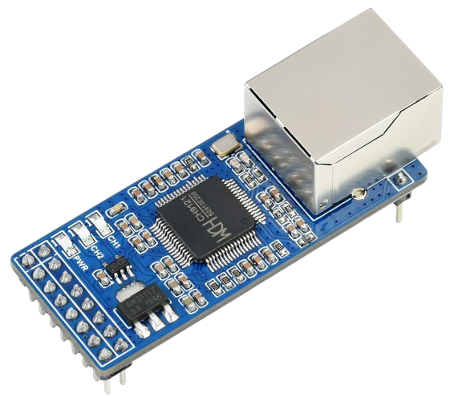

UV PROM Erasing
I’ve long dreamed of creating a working device based on a very ancient microprocessor, such as the КР580ВМ80А, Z80, or 6502. It would be great if it didn’t just run some primitive program (I’ve already managed to blink an LED long ago), but somehow interacted with the outside world, for example, responding via HTTP protocol through Ethernet. Sounds complicated? Yes, perhaps, but let’s not forget that nowadays there are a whole host of gadgets that can significantly simplify such tasks — for example, this Ethernet-to-UART adapter:
{kind=link}
Such a project would essentially be a full-fledged small computer: it would have a processor, permanent memory, random access memory, and an I/O port.
The project implementation began with component selection. I chose the Z80 as the processor because it can work at any low clock frequency and is generally easy to clock (unlike the КР580ВМ80А) and, moreover, requires only one supply voltage (as opposed to the same КР580ВМ80А). Honestly, I find it somewhat difficult to perceive the Z80 as a central processor — I’m used to thinking of it as a “sound chip”, since that’s exactly the role it plays in my deeply beloved and thoroughly played Sega Genesis, but ZX Spectrum fans will probably be offended at this point.
Then came the question of selecting RAM and ROM. Random Access Memory (RAM) is memory whose data changes dynamically during computer operation. Read-Only Memory (ROM) is memory whose data is written once during device assembly and never changes again.
The Z80 processor has a 16-bit address bus. This means it can directly address 64 kilobytes of memory without any tricks. Typically, such an address space organization structure is used where some part of it is “mapped” to permanent memory, some to RAM, and the rest to I/O ports. That is, for the processor there will be no difference between permanent and RAM — for it, all this will simply be “memory” with addresses from 0x0000 to 0xFFFF, and we determine the specific structure of this address space.
The simplest option would be to take RAM and ROM chips that have the same capacity and “switch” them through the higher bit of the data bus. But first, I decided to rummage through my stash and see what memory chips I actually had.
RAM chips of those years are divided into two main types: DRAM and SRAM — dynamic and static RAM. Static RAM is simpler to manage, and I wanted a relatively simple design, so I didn’t consider DRAM chips. ROM chips, in turn, are also divided into subtypes, the most interesting of which are memory representing a matrix of fusible links and memory erasable by UV radiation.
Note
Strictly speaking, both ROM and RAM are also divided into 2 types by interface type: parallel and serial. But since working with a parallel interface is significantly simpler, we’ll only consider chips with a parallel interface.
Fusible links are, of course, cool, but — alas — one-time use. They do have their advantages — for example, the highest resistance to ionizing radiation, but in our case this is completely unnecessary. But memory erasable by ultraviolet radiation — you must agree, there’s something romantic about it, something cyberpunk-ish. So let’s start with selecting permanent memory erasable by UV radiation. I found these classic chips in my workshop:

At this point, I should tell you an interesting story.
Note
Once in March 2022, a stalker was exploring an abandoned electronics components factory in Engels. He stumbled upon a room where boxes of microchips were lying around. As luck would have it, this stalker was quite a skilled electronics engineer, so he immediately went online to find out the characteristics of these chips. Imagine his surprise when a search for “КС573РТ81В” returned not a single page on the entire world wide web! And yet the chips were literally right in front of him. He guessed that he had stumbled upon some experimental batch that simply hadn’t made it to market. The chips were successfully taken home for study. Through experimentation, it was established that this is a Russian analog of the popular M27C256. The stalker decided to sell these chips through Avito — and that’s exactly how (along with him telling me this story) I got my several specimens. At the moment, absolutely all mentions of КС573РТ81В on the internet are related to this case. Including the stalker’s own website.
Let’s look at a comparison table of the main characteristics of the found chips:
Name |
Address Bus |
Data Bus |
Capacity |
|---|---|---|---|
КС573РФ2 |
11 bits |
8 bits |
2 KB |
КС573РФ4А |
13 bits |
8 bits |
8 KB |
КС573РТ81В |
15 bits |
8 bits |
32 KB |
M27C256 |
15 bits |
8 bits |
32 KB |
M27C801 |
20 bits |
8 bits |
1 MB |
It would probably be cool to first test these chips in action, somehow visualizing the process of writing and erasing them. But how to do this? Oh, let’s just write some image into the chip and repeatedly read it with a programmer while shining a UV lamp into the window. Actually, this mode of using ROM is not recommended — erasing should happen outside the reading procedure, but after all, we have a just-for-fun project and no one will forbid us to experiment.
In GIMP’s image export window, there’s a “Raw Image Data” option. Using it, we’ll save the image as a pixel array, write it to ROM using the XGecu Pro programmer, and then write a script that will read the image from ROM every few seconds while we shine UV radiation into the window. Then we’ll compile all the resulting frames into a video using ffmpeg. Let’s go!
I should note another interesting point. I was only able to successfully erase the chip using so-called far ultraviolet — radiation with a wavelength of 254 nanometers. This is quite dangerous radiation, as at this wavelength ultraviolet light begins to exhibit some properties of X-ray radiation — in particular, you can easily get skin cancer, so I strongly recommend that you do not work with such radiation, at least not without isolating yourself from it. Unfortunately, all my attempts to erase the chip with less dangerous wavelength radiation — 365nm, as well as using direct sunlight, were unsuccessful — even after several hours of intense illumination directly into the window, the byte-by-byte dump read from the chip exactly matched what had been written there previously.
That’s all for now, unfortunately. Due to some circumstances, work on the project has been temporarily suspended, however, I decided to share the erasing visualization and still formatted it into a full article. This article may still be expanded in the future, but we’ll see how it goes.